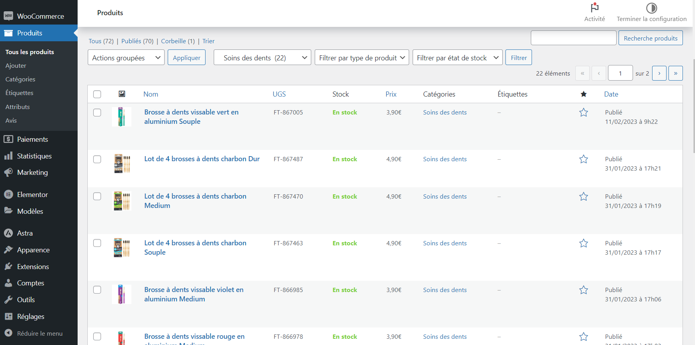
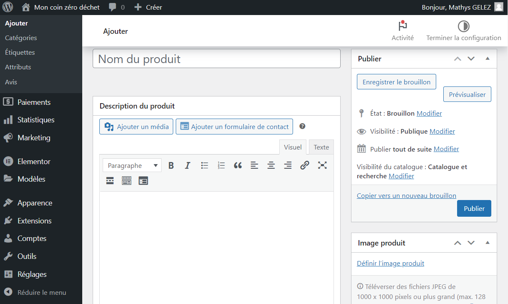
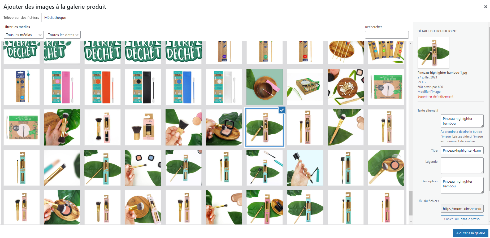
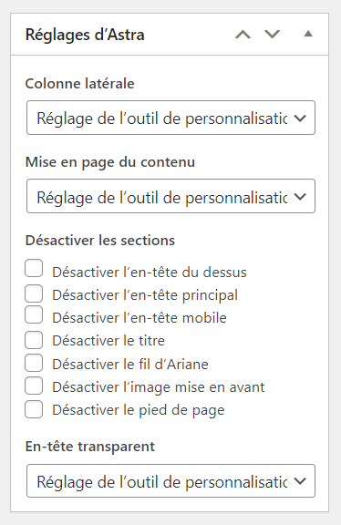
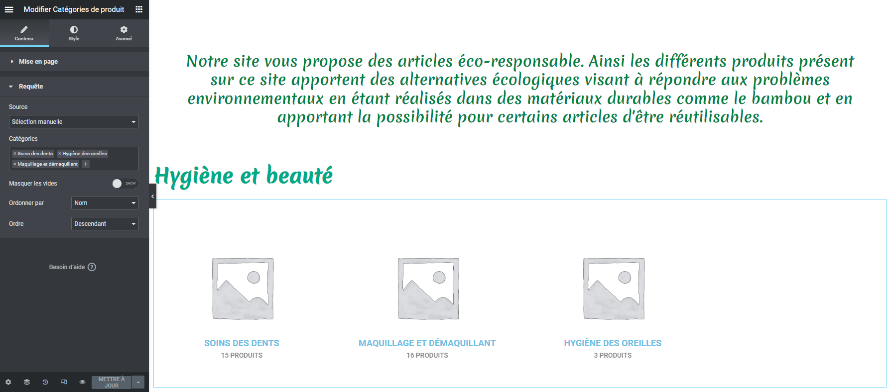
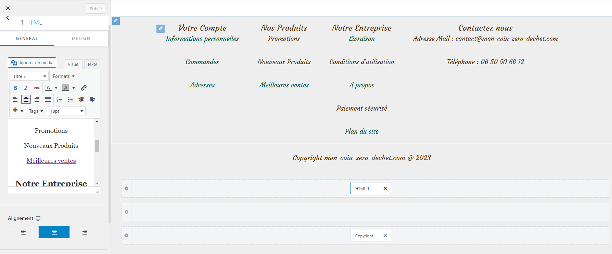

Stage 2023
Résumé
Dans le cadre de ma seconde année de BTS SIO, j'ai pu retravailler avec t'entreprise Louise&Co. de faire un stage pour la société Louiseenco. Cette fois ci j'ai travaillé sur un autre site de vente intitulé "mon-coin-zero-dechet.com" qui est un autre site de vente en ligne mais celui ci est géré par Wordpress. Ce site à pour but de vendre des articles d'hygiènes éco-responsables en tout genre (hygiène dentaire, maquillage,...)
Les missions qui m'ont été confiées
- - Ajouter des articles et les paramètrer comme il faut (images, attributs, catégorie,...)
- - Créer des nouvelles pages pour le site et les modifier via Elementor
L'ajout d'article via Woocommerce
Afin de réaliser un site de vente avec Wordpress, on utilise l'extension Woocommerce pour prendre en charge la création et la publication des articles. Ainsi Woocommerce génére une base de données que l'on peut remplir des différents articles que l'on souhaite vendre sur le site.
Menu affichant tout les produits enregistrés:
Pour chaque article il faut resecencer toute ces données:
- - Le nom du produit
- - L'image du produit
- - Les images de la galleries du produit (les images additionnelles)
- - La description
- - La catégorie
- - Les attributs (Les différents modèles possibles comme des tailles, couleurs,...)
Menu permettant d'ajouter un article:
Menu permettant d'ajouter des images aux produits:
J'ai également définit les attributs afin de les ajouter aux articles qui en avait besoin. Par exemple le magasin vend plusieurs modèles de coton-tiges réutilisables avec des couleurs différents donc plutôt que de créer des articles différents dans la base de donnée pour chaque couleur, j'ai créer un attribut "couleur de coton-tiges" qui permet aux acheteurs de directement sélectionner la couleur souhaité sur la page de l'article.
Woocommerce nous permet même de modifier l'affichage des pages de chaque articles via les réglages Astra:
La création et modification des pages
Autant pour réaliser un site de vente qu'autre type de site, l'outil Elementor de Wordpress est un outil parfait pour concevoir facilement des pages pour le site. Elementor permet d'ajouter le contenu bloc par bloc sur le site via différents éléments sélectionnable dans la banque d'élément de Elementor. L'entreprise ayant la licence Pro, j'ai eu accès à des éléments plus sophistiqués, notamment des éléments spécialement dédié pour Woocommerce.
Ajout des articles sur la page d'acceuil du site:
Malheureusement Elementor ne permet pas d'améliorer le haut et pied de page. Pour le modifier j'ai donc du passer par la modification du thème de Wordpress:
